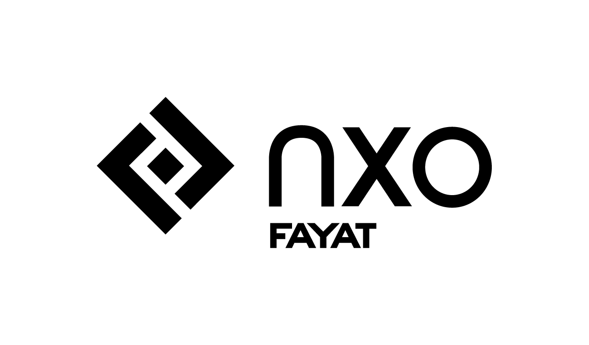
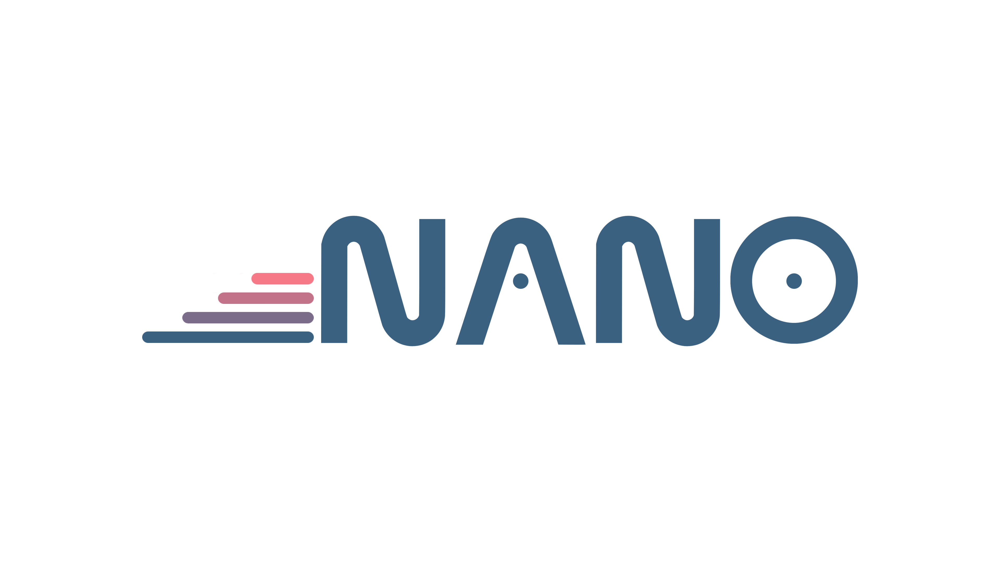
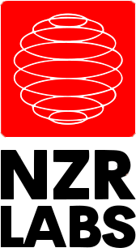

Welcome to my website.
My name is Noam Zeitoun and I am from Paris, France. I am passionate about mathematics, computer science, programming and other sciences in general.
Currently working at NXO France, as an Software Engineer in the NetDevOps team NANO, whose objective is to automate the processes of integration and operation of computer networks, and to increase the efficiency and reliability of changes on the infrastructure. (See my resume)
In parallel to my work, I have also founded my own company called NZR Labs, which is a cutting-edge technology firm specializing in web solutions and innovative software development.
In addition, I actively participate in CTF hacking competitions as a member of the *SBB* french team (Sm0rtBuff3rB0yZ), which I co-created with a friend (s4tb0y, student at École 2600).